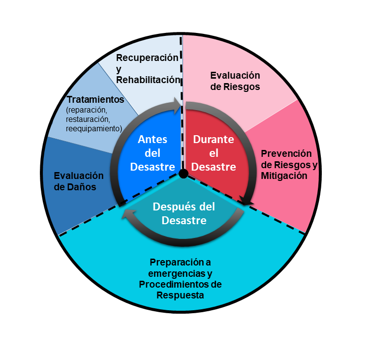

Explora, visualiza y comparte!
La inforción de cada un de los índices puede ser exportada en formato CSV o TXT. Esto permite que sean abiertos en cualquier editor de código o texto:
Explora, visualiza y comparte!
La inforción de cada un de los índices puede ser exportada en formato CSV o TXT. Esto permite que sean abiertos en cualquier editor de código o texto:

Example headline